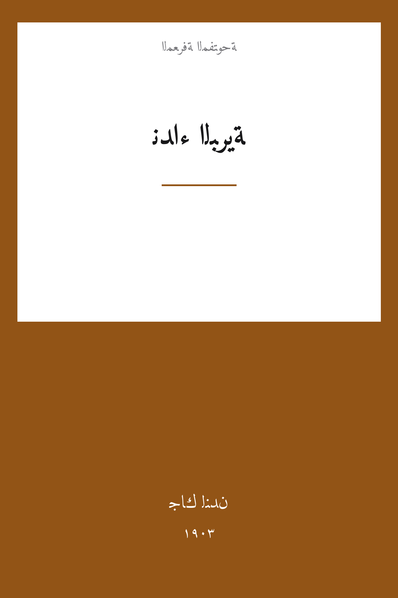

The Call of the Wild
نداء البرّية
الأدب
ملك عام
ترجمة كاملة
نداء البرّية — باك كلبٌ كبير عاش حياةً رتيبة قريدةً في ملك القاضي ميلر بجنوب كاليفورنيا، حتى خطفه بستانيٌّ محتال وباعه إلى الشمال إبان حمّى الذهب في كلوندايك. هناك يتعلم باك قانون الهراوة والناب، ويجرّ زلاجات البريد على جليد يوكون، ويلتقي الرجل الوحيد الذي يحبّه جون ثورنتون، ثم لا تلبث أصوات الغابة الأولى أن تناديه من وراء نار المخيّم. رواية جاك لندن الخالدة عن الطبيعة والغريزة والحقيقة الغاشمة، بترجمة كاملة بسبعة فصولها.
| المؤلف | جاك لندن — Jack London |
| سنة النص الأصلي | ١٩٠٣ |
| كلمات المصدر (الإنجليزية) | ٣٢٤٣٢ |
| كلمات الترجمة (العربية) | ٢٣١٨٧ |
| مقاطع الترجمة المدققة | ٢٣ |
| مدة القراءة التقريبية | ≈ ٥٢٧ دقيقة |
الترخيص والحقوق: النص الأصلي (1903) في الملك العام. هذه الترجمة العربية منشورة بإذن حر. المصدر: gutenberg.org/ebooks/215